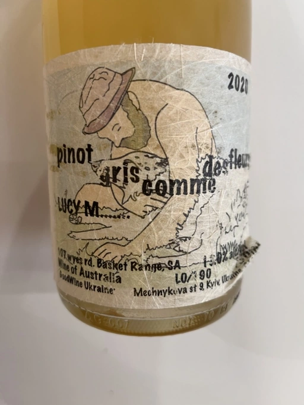
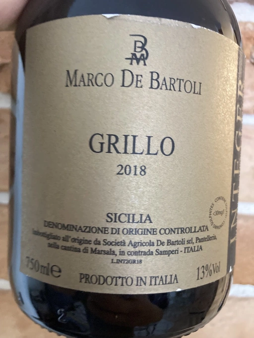
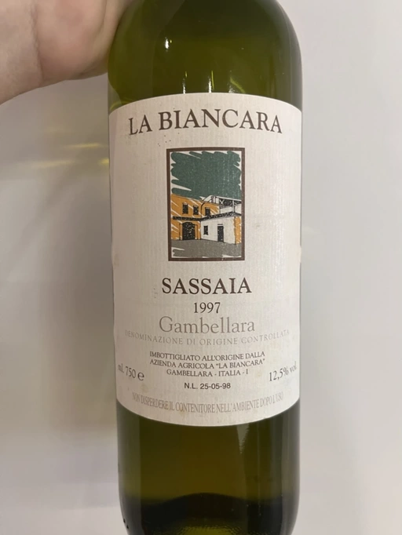
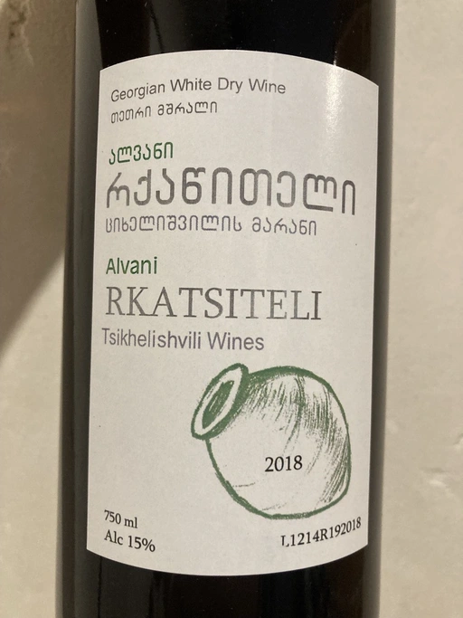
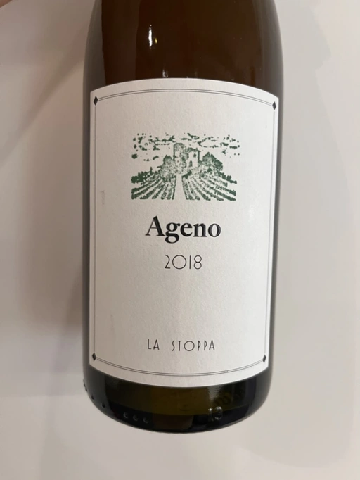
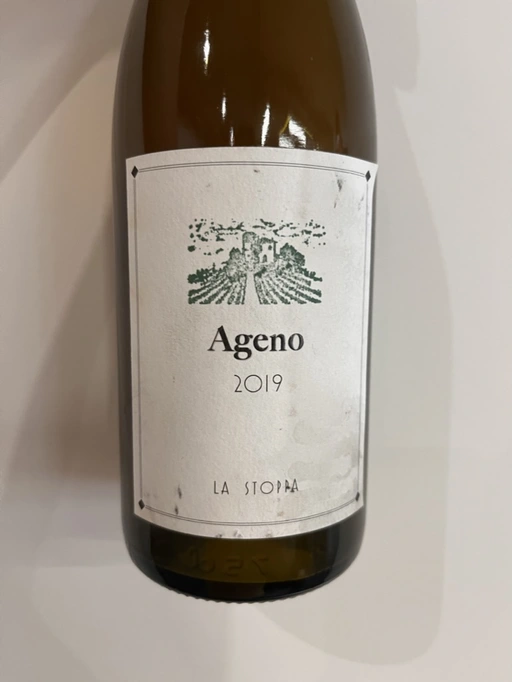
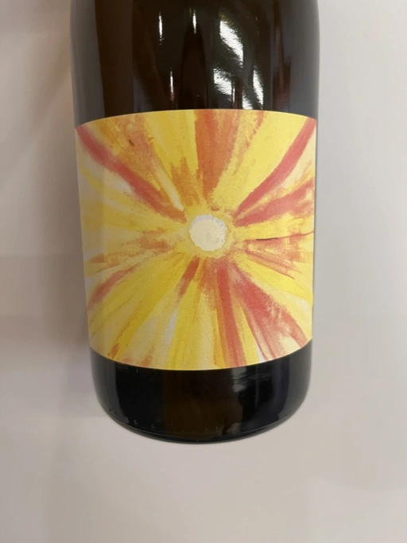
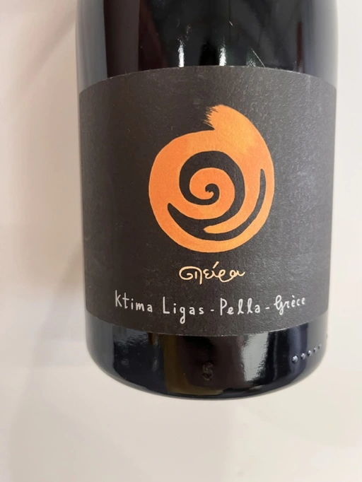
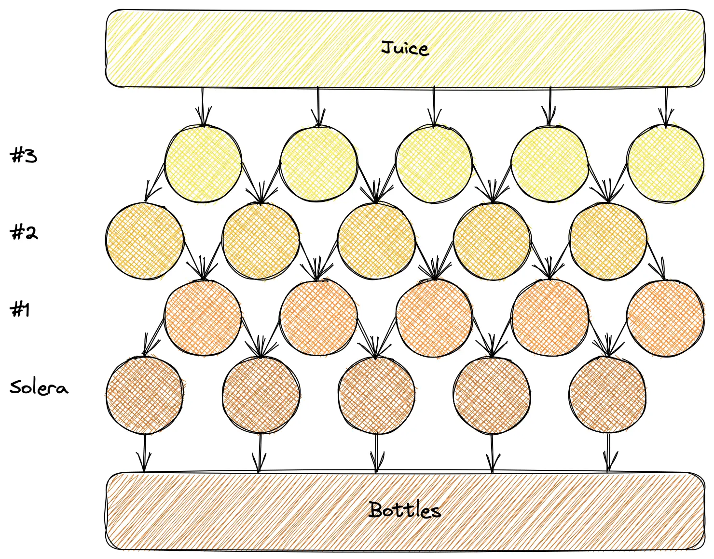

Mixed Bag Vol. 2: Orange
Selecting wines for an event is a tricky job. You build a story to tell. A story composed of fragments as small as grains. Sometimes it’s on the surface, expressed by actions and printed words. Sometimes it’s in the bottle, sensible yet elusive. And there is subjective reality consisting of availability and my desire to taste something new.
Our trip today is a circular one. We head off Basket Range only to come back to Basket Range. The route is full of rebels and artisanal wines. So take your glass, and let’s go. These are our stops.
- Lucy Margaux Pinot Gris Comme de Fleurs 2020
- Marco de Bartoli Integer Grillo 2018
- La Biancara Sassaia 1997
- Tsikhelishvili Wines Alvani Rkatsiteli 2018
- La Stoppa Ageno 2018
- La Stoppa Ageno 2019
- Gentle Folk Summertown blanc 2019
- (extra) Ktima Ligas Spira 2019
Scores
| Wine #1 | Wine #2 | Wine #3 | Wine #4 | Wine #5 | Wine #6 | Wine #7 | Wine #8 | |
|---|---|---|---|---|---|---|---|---|
| Andrii S | 3.50 | 4.20 | 4.35 | 4.20 | 4.30 | 3.80 | 4.00 | 4.20 |
| Viktoria | 4.00 | 3.80 | 4.50 | 3.70 | 4.60 | 3.30 | 4.00 | 4.40 |
| Tetiana | 4.30 | 4.30 | 4.00 | 2.00 | 4.00 | 3.40 | 3.50 | 4.40 |
| Dmytro | 4.20 | 4.10 | 3.90 | 3.40 | 4.40 | 3.60 | 4.10 | 4.60 |
| Elvira | 3.70 | 4.30 | 4.40 | 3.90 | 4.50 | 4.00 | 3.50 | 4.50 |
| Oleksandr Y | 3.80 | 4.20 | 4.00 | 3.40 | 4.20 | 3.60 | 3.70 | 4.10 |
| Oleksandr R | 3.50 | 3.00 | 4.50 | 2.30 | 4.70 | 4.00 | 3.80 | 4.70 |
| Artem | 4.00 | 3.30 | 3.90 | 4.00 | 4.50 | 4.40 | 4.20 | - |
| Vasyl | 3.80 | 4.30 | 4.10 | 3.80 | 4.20 | 3.00 | 4.10 | 4.30 |
| Andrii P | 4.30 | 3.80 | 4.00 | 2.00 | 4.70 | 4.10 | 3.80 | 4.60 |
| Boris B | 3.80 | 4.20 | 4.30 | 4.10 | 4.20 | 3.70 | 4.10 | 4.00 |
| amean | sdev | favourite | outcast | price | QPR | |
|---|---|---|---|---|---|---|
| Wine #1 | 3.90 | 0.0745 | 1.00 | 1.00 | 946.00 | 2.1847 |
| Wine #2 | 3.95 | 0.1770 | 2.00 | 2.00 | 1185.00 | 1.8917 |
| Wine #3 | 4.18 | 0.0506 | 3.00 | 0.00 | 1600.00 | 1.9658 |
| Wine #4 | 3.35 | 0.6443 | 1.00 | 5.00 | 690.00 | 1.3642 |
| Wine #5 | 4.39 | 0.0481 | 2.00 | 0.00 | 1150.00 | 3.8225 |
| Wine #6 | 3.72 | 0.1451 | 0.00 | 2.00 | 1150.00 | 1.3774 |
| Wine #7 | 3.89 | 0.0554 | 2.00 | 1.00 | 1400.00 | 1.4565 |
| Wine #8 | 4.38 | 0.0476 | 0.00 | 0.00 | 1290.00 | 3.3491 |
How to read this table:
ameanis arithmetic mean (and not ‘amen’), calculated as sum of all scores divided by count of scores for particular wine. It is more useful thantotal, because on some events some wines are not tasted by all participants.sdevis standard deviation. The bigger this value the more controversial the wine is, meaning that people have different opinions on this one.favouriteis amount of people who marked this wine as favourite of the event.outcastis amount of people who marked this wine as outcast of the event.priceis wine price in UAH.QPRis quality price ratio, calculated in as100 * factorial(rms)/price. The reason behind this totally unprofessional formula is simple. At some point you have to pay more and more to get a little fraction of satisfaction. Factorial used in this formula rewards scores close to the upper bound 120 times more than scores close to the lower bound.
Lucy Margaux Pinot Gris Comme de Fleurs 2020

- producer: Lucy Margaux
- name: Pinot Gris Comme de Fleurs
- vintage: 2020
- grapes: Pinot Gris
- location: Basket Range, Adelaide Hills, South Australia
- skin contact: up to 10 days
- alcohol: 13.0
- sugar: 0.3
- price: 946 UAH
- importer: Wine Bureau
Bright and catchy labels on a handmade fibre paper, hazy content with flocks of sediment, seemingly atypical grapes for Australia… Even a single bottle of Lucy M stands out on a wine shelf. They produce a wide range of wines with little information available. There is an obvious assumption we can make. These wines are made in the low-intervention style. And as it turns out, Anton Gerrard van Klopper, a man behind Lucy M, is a convinced naturalist.
Before starting his own winery, Anton worked in hospitality for 10 years, where he became interested in wines. He was curious: why did he like some wines more than others. There are many possible reasons, so he headed off to the University of Adelaide to complete a degree in oenology.
For a few years after completing his degree, Anton travelled the world to gain valuable experience by working with other winemakers he respected. He slowly started to form his philosophy. It is typical for low intervention winemakers, but it was the beginning of XXI century. And you could not learn it from Google or university books.
So, in 2002, Anton found a cherry orchard in Peramangk Country in the beautiful Basket Range area of the Adelaide Hills, South Australia. At the time, the Adelaide Hills was renowned as one of Australia’s premier cool-climate regions, with a growing reputation for Chardonnay, Shiraz and sparkling wines. It took some time for this region to become a hub for organic and biodynamic viticulture. And Anton played his part in this quest by convincing others to change the ways of farming.
The most challenging part of natural winemaking is to live with the naysayers who choose recipe over craft.
Anton Gerrard van Klopper
Anton walked a path from renegade to trailblazer for Adelaide Hills, and now he can focus on his craft. Ha, if only it would be so simple. Remember that he worked in hospitality before starting a winery? In 2016 together with Jasper Button from Commune of Buttons, he opened a wine bar in the nearby hamlet of Summertown. The Summertown Aristologist gives Anton the freedom to treat people with wines and foods of his making. It turns out he never gave up on his culinary skills. And now, two of his crafts sing a single song.
Marco de Bartoli Integer Grillo 2018

- producer: Marco de Bartoli
- name: Integer Grillo
- vintage: 2018
- grapes: Grillo
- location: Western Sicily, Contrada Samperi, Marsala (TP)
- appellation: Sicilia DOC
- skin contact: 10 days (barrels), few months (clay amphoras)
- alcohol: 13.0
- sugar: 2.1
- price: 1185 UAH
- importer: Wine Bureau
This Grillo comes from a 9 ha vineyard in Western Sicily, Contrada Samperi, Marsala. The average age of vines is over 20 years.
Grapes are gently destemmed and softly pressed to start a spontaneous fermentation using indigenous yeasts. A small part of the batch is fermented in old barrels and macerated for 10 days. The remaining batch ferments in handmade clay amphoras by Tava and goes on macerating for a few months. Both alcoholic and malolactic fermentations are completed in an environment with indirectly controlled temperature.
3400 bottles produced.
La Biancara Sassaia 1997

- producer: La Biancara
- name: Sassaia
- vintage: 1997
- grapes: Garganega
- location: Veneto
- appellation: Gambellara DOC
- skin contact: up to 3 days
- alcohol: 12.5
- price: 1600 UAH
- importer: Sabotage
The story of the famous La Biancara winery began in 1977 when 23-years old Angiolino Maule and his wife Rosamaria opened a bar/pizzeria to earn and save money. Who knows, maybe the earth and vines were calling him all the time, and he waited for the right moment? And after 2 years, the couple bought a farmhouse with about 15 acres of vineyard land, three of which were planted with old Garganega vines.
In any case, he settled in Gambellara, an extension of Soave foothills in Veneto. These south-facing slopes are protected from Alpine northern winds by the southern Dolomites. The altitude here is between 150 and 250 meters. The hills are volcanic in origin and have rich, dark mineral soils with good amounts of fine clay.
Just like in Soave, the principal white grape in Gambellara is Garganega, backed up with small amounts of Trebbiano. But what makes Angiolino Maule stand out is the biodynamic approach toward viticulture that he started to use from the very beginning of La Biancara. So for decades, Angiolino ploughs his 15 hectares. He doesn’t use any soil treatments, chemical or otherwise. The result is a sustainable ecosystem that gives birth to healthy grapes. Of course, they are handpicked.
For better or worse, Angiolino believes that the work in the cellar must be consistent with the work in the vines. Vinification, ageing and bottling involve no additives. Only indigenous yeast, no sulfur nor enzymes, no temperature control, no fining and no filtration.
In the early 1990s, his life took a turn when he befriended a small group of Fruili extremists, including Joško Gravner and Stanko Radikon, well known figures in the world of skin-contact wine. Angiolino limits maceration to no more than 3 days and protects his must from air to avoid Jerez-like oxidation found in more intense orange wines.
Oxidation makes all wines taste the same. You can’t tell if it’s Chardonnay, Garganega or Ribolla.
This period was financially painful. Just like with Josko Gravner’s wine, orders of his wine plummeted. And the same 1997 got devastating scores. Angiolino contemplated a return to his pizzaiolo job because he needed to feed his family. But luckily, a Japanese importer who admired his efforts committed to buying all the wine Maule could make, allowing him to continue.
We all made wines with defects. They pleased extremist drinkers - not everyone.
And today, Angiolino even works with Franco Giacosa, a retired enologist from Zonin, a giant producer that owns multiple estates around Italy. Franco Giacosa became intrigued with the challenge of making good wines with no additives. He even told Angiolino Maule: “You’re a great viticulturist, but you’re an awful winemaker.”
And today we have an opportunity to taste the story itself in the form of Sassaia 1997.
Tsikhelishvili Wines Alvani Rkatsiteli 2018

- producer: Tsikhelishvili Wines
- name: Alvani Rkatsiteli
- vintage: 2018
- grapes: Rkatsiteli
- location: Kakhetia
- skin contact: ??? (but at least in qvevri)
- alcohol: 15
- price: 690 UAH
- importer: Wine Bureau
Tsikhelishvili Cellar is run by Aleqsi Tsikhelishvili, an icon in the Georgian natural wine world. He learned winemaking techniques at an early age from his mother. The family owns 3 ha old vineyards in the village of Zemo Alvani in Kakheti. Aleqsi cultivates Rkatsiteli, Mtsvane and Jghia. The latter grape is on the brink of extinction, and Aleqsi owns 100 vines! Literally hand-made and in low amounts (3000-5000 bottles per year), these wines are exported to the USA, Japan, Germany and Ukraine.
While the exterior and the story might look simple, this is the case when you need to taste the wine to see its true nature of beauty and craft.
La Stoppa Ageno 2018

- producer: La Stoppa
- name: Ageno
- vintage: 2018
- grapes: Malvasia di Candia Aromatica
- location: Emilia-Romagna
- skin contact: ~4 months
- alcohol: 13
- sugar: 0.6
- produced: 23800 bottles
- price: 1150 UAH
- importer: Wine Bureau
La Stoppa is a legendary historic estate that was founded in 19th century by a lawyer named Giancarlo Ageno. Initially focused on Bordeaux varieties, nowadays its vineyards are occupied by local Barbera, Bonarda and Malvasia. Elena Pantaleoni, current owner of the estate, works closely with famous enologist Giulio Armani (that has his own side project called Denavolo) to craft wines expressive of place and grape. They are advocates of minimal intervention along with usage of huge Slavonian oak botti and used French barriques. Also they are farming organically since 1990’s and in 2008 they even acquired proper certification.
Ageno is named after the founder of La Stoppa, who was the first to believe and give value the great potential of this area. The only dry white wine of the estate, obtained after a long spontaneous maceration from grapes of this hot and low yielding land.
La Stoppa Ageno 2019

- producer: La Stoppa
- name: Ageno
- vintage: 2019
- grapes: Malvasia di Candia Aromatica
- location: Emilia-Romagna
- skin contact: ~4 months
- alcohol: 13.5
- sugar: 0.6
- produced: 21300 bottles
- price: 1150 UAH
- importer: Wine Bureau
This particular bottle has survived the russian attack. It was saved because other bottles exploded, and their liquid saved some bottles from fire. You can even see some ash on the label. They say that this incident has not affected the wine, but there is only one way to check this. And blind tasting is a great way.
Gentle Folk Summertown blanc 2019

- producer: Gentle Folk
- name: Summertown blanc
- vintage: 2019
- grapes: Sauvignon Blanc
- location: Basket Range, Adelaide Hills, South Australia
- skin contact: 2-6 weeks
- alcohol: 13.0
- sugar: 2
- price: 1400 UAH
- importer: Wine Bureau
And here we are, back in the Basket Range in the hands of Gentle Folks. Their focus is mainly on Pinot Noir and Chardonnay, but they have some experiments with Sauvignon Blanc. And it’s not your typical New World Sauvignon Blanc.
I have always loved Sauvignon blanc, especially out of the Loire and Austria, but sadly it has got bad rap down here, for good reasons though – Australian Sauvignons are generally horrible. It’s a pity as there are some very beautiful and old Sauvignon vineyards in the Adelaide Hills.
Gareth
Their original Scary Gully vineyard is gone, but Gentle Folks managed to lease the 1.1 ha Cottell Family Vineyard. So this Sauvignon Blanc comes from a block sitting on schist, southwest facing (cold) at 620m and at 32 years of age on its own roots.
Grapes are manually harvested, fermented in whole clusters. Half of the grapes undergo carbonic maceration for four days to two weeks. The other half direct pressed. The wine is fermented with ambient yeasts and left on skins for between two and six weeks before pressing into 500 litre used puncheons. Full malo occurs in the barrels. The wine is bottled without filtration or fining.
Ktima Ligas Spira 2019

- producer: Ktima Ligas
- name: Spira
- vintage: 2019 (?)
- grapes: Xinomavro
- location: Macedonia, Greece
- skin contact: 2-6 weeks
- alcohol: 13.5
- sugar: 2
- price: 1290 UAH
- importer: Wine Bureau
After tasting the story, we demanded more. Luckily, I had several extra bottles with me, so we got a chance to fulfil our desire. Technically, I am a terrible person for bringing a bottle of blanc de noir Xinomavro made in the Solera system to a wine tasting dedicated to skin contact wines. Nevertheless, no one doubted.
What does the Solera system mean? It’s a process for wine ageing by fractional blending. Basically, you blend older wines with younger wines to achieve specific ‘average’ age and consistent (or comparable) quality. In some way, it’s a pyramid scheme for wine ageing.
While it’s labour intensive, it’s easy to understand the basic principle behind the blending procedure.

We start from the bottom of this pyramid. Imagine that you already have Solera ready for bottling. You use only a portion of available wine (for example, 25%). You have filled bottles, but your Solera barrels are partially empty! Oh my, what to do? Of course, you transfer wine from #1 line to Solera. But now barrels from #2 line are partially empty! Oh my, what to do? Of course, you transfer wine from #2 line to #1 line. And so on, until you use the freshest wine you have. There is a homework question that I leave for you. What happens with the average age in Solera barrels?
Conclusions
It was expected that Ageno 2018 is going to be one of the top-rated wines. But listen, not only did the participants guess this wine, but they also noted the craftsmanship behind this wine. Giulio Armani, if you are reading this, you must be happy.
I am sad that Tsikhelishvili Wines Alvani Rkatsiteli 2018 was so controversial, but it makes sense if you consider its rustic nature and raw power. At least one person named it as favourite wine of the evening, which is nice.
It is impossible to put in words my excitement from the event. But just believe me that it was stunning. Even the world of skin contact wines is vast and diverse. And that makes it incredible to look into the eyes of people who taste them blind. And the most important thing for me - everyone found something for them. And this sparks joy :)
See you next time. Safe travels!